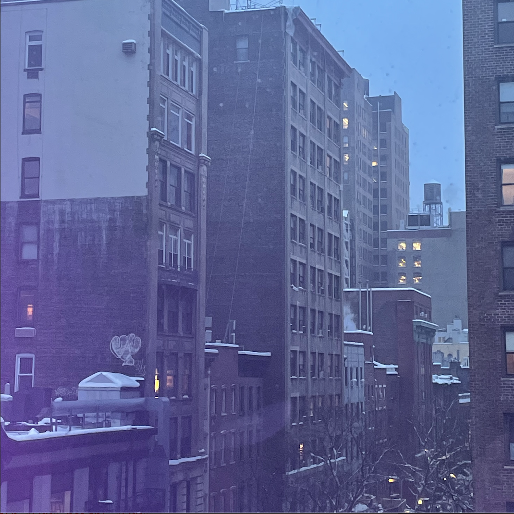

This webpage is for the Spring 🌸🌱 2021 Journalism Design Toolkit class 🖊️ 📚 as part of the Journalism+Design department at Eugene Lang College for Liberal Arts at the New School University. https://twitter.com/home
Here are some links in an ordered list:
Hi my name is Madelyn and this is my web page. I also go by Maddy. I study Journalism and Design at the New School and right now I am coding a website on Atom. I don't really know what I am doing. I am a libra ♎ , a cancer moon ♋ , and a taurus rising ♉ . I like astrology. I also like the color pink 🌸. I also really enjoy cooking. Here is a cooking video I watched on youtube recently!
Here is a picture I took during class
The location of where this photo was taken!